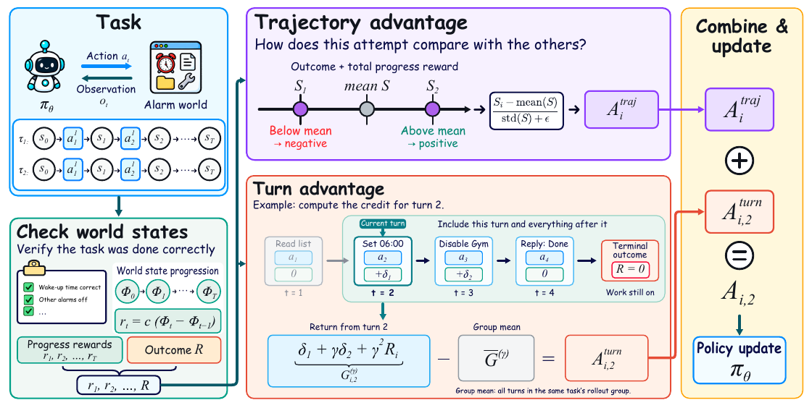
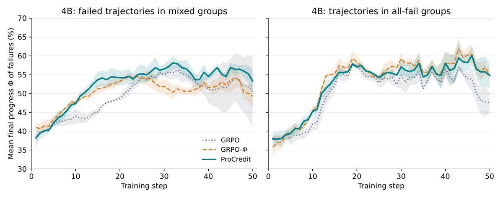
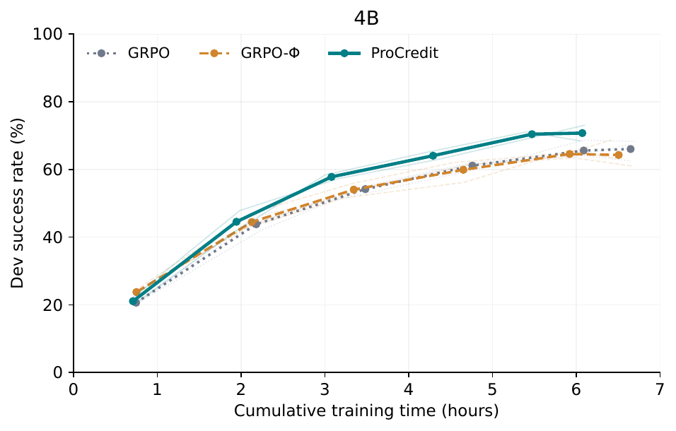

ProCredit: From Outcome Rewards to Progress Credit in Agentic Reinforcement Learning
authors
Ming Ma, Yi Zhu, Yiran Zhong, et al. (10 auteurs)
groupe
Tongyi Lab (Alibaba Group) — corresponding Yi Zhu & Yiran Zhong ; senior Steven Hoi ; co-affil. Institute of Neuroscience CAS (Tianming Yang), UCLA, NTU
gdm_authors
aucun
date
2026-09-23 (v2 : 2026-09-24)
venue
preprint (comment et journal_ref vides dans meta.json)
categorie
ALGO (⚠️ ENV-adjacent : ne construit pas d'env, mais redéfinit *ce qu'on lit* du vérifieur existant)
base_model
Qwen3.5-4B, Qwen3.5-9B, Qwen3.5-35B-A3B — RL depuis les *base models* [§4.1]
domaine_env
agents multi-app / tool use (AppWorld, ToolSandbox) ; éval de rétention sur BFCL
env_publie
non (aucun lien code/poids/données dans le papier ni les annexes ; envs sous-jacents AppWorld & ToolSandbox publics mais tiers)
evidence
5
evidence_manquant
[repro]
traction
non mesuré (API Semantic Scholar en 429 à la rédaction, 2026-10-18) ; preprint, <1 mois depuis publication → traction non interprétable
TL;DR : les acceptance checks exécutables qui décident du succès final sont rejoués après chaque tour pendant l'entraînement ; la fraction de checks passés définit un progress Φ∈[0,1], sa variation devient le reward du tour, et ces rewards alimentent deux advantages sommés (trajectoire + tour) → signal de progrès vérifié sans reward model.
Claim principal précis : (i) sur AppWorld, à partir de Qwen3.5 base aux 3 échelles, ProCredit a le meilleur TGC sur les deux test sets, avec +4.1 pts TGC sur la meilleure baseline outcome-only (DAPO) à 4B test-normal [Tab. 1] ; (ii) le gain vient du moment où le crédit est attribué, pas de la quantité de progrès ajoutée au score : GRPO-Φ, qui a exactement le même score de trajectoire mais pas de terme turn-level, n'améliore pas [§4.2, Tab. 3].
⚠️ Nuance centrale à retenir dès maintenant (développée en §5 et §7) : le « crédit au tour où le progrès a lieu » est en réalité un return-to-goG_t = R + c(Φ_T − Φ_{t−1}), donc une staircase décroissante en t. Tout tour antérieur à un progrès en hérite ; App. B l'écrit noir sur blanc : « Reading the list and the immediately following progress turn receive equal credit » [App. B]. Ce n'est pas une attribution causale, c'est un tilt monotone pro-early-turns.
1. Tâches & data
Origine des tâches : aucune tâche créée. AppWorld [§4.1] et ToolSandbox [§4.1] tels quels, tâches écrites par les auteurs de ces benchmarks (humains).
Volume AppWorld : 90 tâches train, 57 dev, 168 test-normal, 417 test-challenge (apps non vues à l'entraînement) [§4.1]. Régime très petit : 90 tâches × 8 rollouts × 25 tâches/step × 50 steps ⇒ ~10 000 rollouts/run [Tab. H1].
Volume ToolSandbox : 101 tâches au total → 52 train / 21 éval ; 28 tâches exclues car « the base model completes all of them or they have fewer than two milestones » [§4.1]. ⚠️ sélection de l'éval sur la base du modèle testé → biais de headroom, à ne pas lire comme un benchmark propre.
D'où viennent les checks intermédiaires (question clé) : de nulle part de nouveau. Ce sont les unit tests exécutables d'AppWorld et les milestones de ToolSandbox, c.-à-d. les checks d'acceptation finale, rejoués sur les états intermédiaires [§1, §3.2, §5]. Personne ne les écrit pour ce papier → coût d'annotation marginal nul. C'est tout l'argument : « progress is as verifiable as the outcome » [abstract].
Filtrage des checks : un seul, explicite — « we include only checks that fail in the initial state, so Φ₀=0 » [§3.2]. Et C_g est un sous-ensemble des checks d'acceptation : R=1 exige que tous les checks d'acceptation passent, pas seulement ceux de C_g [App. F].
Distribution de difficulté : test-normal découpé easy/medium/hard a posteriori via les taux de succès par tâche de GRPO (donc indépendamment des méthodes comparées) [App. C, Tab. C2]. Nombre de checks K_g par tâche : non précisé (l'exemple d'App. B utilise K=3).
Curriculum : aucun. 25 tâches/step tirées des 90, pas de rééchantillonnage ni d'ordonnancement rapporté [Tab. H1]. Pas de resampling type DAPO côté ProCredit.
Filtrage par pass@k du base model : non sur AppWorld ; oui implicitement sur ToolSandbox (tâches résolues à 100 % par le base model exclues) [§4.1].
Contamination / séparation train-test : splits officiels AppWorld, test-challenge contient des apps non vues [§4.1]. Contamination possible de Qwen3.5 par AppWorld (benchmark public) : non précisé, non discutée. Sélection de checkpoint : non précisé (un dev set de 57 tâches existe et est évalué en cours d'entraînement [App. E], mais la règle de choix du checkpoint rapporté en Tab. 1 n'est pas donnée).
Données SFT/IFT avant RL : baseline SFT seulement, « trajectories generated on AppWorld » [§4.1] — modèle générateur, volume, filtrage : non précisé. Le RL part des base models, pas du SFT [§4.1] : pas de cold start.
Coût humain : aucun pour ce papier (hérité des benchmarks).
2. Environnement / harness
Observation : historique h_t (actions + observations d'outils) ; POMDP assumé — « the model receives observations rather than the full state » ; l'état s_t sert uniquement à la vérification pendant l'entraînement [§3.1, §3.2]. Le progrès n'est jamais lu à l'inférence [§3.2] → pas de dépendance au vérifieur au test.
Espace d'actions / outils : non recopié. Le papier ne donne aucune signature d'outil, aucun format d'action, aucun prompt système. AppWorld = « tasks across applications through multiple turns of tool use, with executable unit tests determining task completion » [§4.1]. Non précisé : code-as-action vs function calling, liste des apps, format JSON. C'est une lacune réelle pour qui veut reproduire le harness.
Multi-turn : oui. Horizon max 50 tours (AppWorld), 30 (ToolSandbox) [Tab. H1]. Longueurs effectives mesurées : 18.4 / 23.9 / 33.7 tours moyens (easy/medium/hard) à 4B γ=1 [Tab. C2]. Fin = déclaration de complétion par le modèle ou limite h [§3.1].
Contexte long : max 2048 tokens/tour, prompt max 4096, response max 28672–32768, contexte 32768–36864 (AppWorld) [Tab. H1]. Mécanisme de troncature / résumé / mémoire : non précisé (l'annexe A mentionne qu'on « retient uniquement les tours non tronqués » pour l'analyse d'entropie [App. A] → la troncature existe donc, mais sa politique n'est pas décrite).
Exécution : AppWorld décrit comme déterministe avec une solution de référence pour chaque tâche [App. F]. Sandbox, conteneurisation, reset entre rollouts, timeouts : non précisé. Le rejeu des checks après chaque tour suppose un accès programmatique à l'état (DB des apps) — modalité technique non précisée.
Gestion des erreurs d'outils : pas de traitement spécial décrit ; les erreurs d'outil sont une catégorie d'analyse (entropie après feedback d'erreur [App. A]), pas un cas géré. Sorties mal formées : non précisé. Pas de reward de format, pas de pénalité de format [§3.3, Tab. H1].
Exemple de trajectoire : le seul donné est l'exemple alarme en App. B — recopié ici (trajectoire B, échec) :
Turn
Action
Φ_t
r_t
G_t
A_turn
A_total
1
Read alarm list
0
0
0.333
−0.333
−0.686
2
Set wake-up alarm to 06:00
1/3
+0.167
0.333
−0.333
−0.686
3
Disable Gym
2/3
+0.167
0.167
−0.500
−0.853
4
Declare completion
2/3
0
0
−0.667
−1.019
[Tab. B1, K=3, c=0.5, γ=1]. ⚠️ Lire la colonne A_turn : le tour 1 (read, inutile au sens causal) et le tour 2 (le tour qui fait le progrès) ont exactement le même crédit. Le crédit décroît le long de la trajectoire ; il ne pointe pas le tour causal.
3. Reward / vérifieur
Type : exécution de checks — unit tests AppWorld / milestones ToolSandbox. Aucun LLM-as-judge, aucun reward model, aucune rubrique, aucune trajectoire de référence [§2, §3.2]. C'est le point de vente : le signal intermédiaire est vérifié, pas estimé.
Granularité : outcome R∈{0,1} plus process. Progress Φ_g(s) = (1/K_g)·Σ_m C_{g,m}(s) ∈ [0,1], crédit partiel par fraction de checks [éq. 3]. Reward du tour r_t = c(Φ_t − Φ_{t−1}), c=0.5 [éq. 4, §4.1]. Agrégation des critères : moyenne non pondérée, checks non ordonnés — limite assumée en §5.
Score de trajectoire : S = R + Σ r_t = R + c(Φ_T − Φ₀) [éq. 5] → potential-based reward shaping à la Ng et al. 1999, avec potentiel c·Φ_g(s), sauf que le potentiel terminal n'est pas annulé, pour garder l'information de complétion finale [§3.3, App. F].
Deux niveaux de crédit :
trajectoire : A_i^traj = (S_i − mean_j S_j)/(std_j S_j + ε) [éq. 6] — GRPO avec S au lieu de R.
tour : G_{i,t} = R_i + c(Φ_{i,T} − Φ_{i,t−1}) (γ=1) [éq. 9], puis A^turn_{i,t} = G_{i,t} − mean sur tous les tours de toutes les trajectoires de la tâche (pas de division par std) [éq. 10].
A_{i,t} = A^traj_i + A^turn_{i,t} [éq. 11] ; tous les tokens d'un tour partagent l'advantage du tour [§3.3].
Propriété clé revendiquée : A_{i,t} − A_{i,t+1} = r_{i,t} exactement [éq. 12] → l'écart de crédit entre tours adjacents est le reward de progrès du tour antérieur ; une query qui ne change rien a le même crédit que le tour suivant.
Termes additionnels : aucun. Pas de format reward, pas de pénalité de longueur, pas de KL, pas de bonus d'entropie [Tab. H1].
Fiabilité du vérifieur : aucune mesure. Pas d'accord inter-annotateur, pas de taux de faux positifs/négatifs des unit tests AppWorld, pas de validation que « fraction de checks passés » corrèle avec le progrès réel. Repose entièrement sur la confiance dans AppWorld. ⚠️ Absence notable : le papier admet en §5 que les checks sont traités comme équipondérés et non ordonnés, sans vérifier que c'est raisonnable.
Robustesse / anti-hacking : pas de red-teaming. Mais deux propriétés structurelles limitent le hacking :
1. Télescopage : S ne dépend que de Φ_T − Φ₀ [éq. 5] → faire et défaire un check en boucle rapporte zéro net, et G_t ne dépend que du progrès restant, donc le cycling ne paie pas non plus au niveau tour.
2. Prop. 1 : toute trajectoire réussie score strictement au-dessus de toute trajectoire échouée, pour tout c>0 [App. F] ; Prop. 2 : si la tâche est résoluble avec proba 1, l'ensemble des politiques optimales est inchangé [App. F].
⚠️ Mais App. F énonce la contrepartie : pour une tâche non résoluble, maximiser S échange proba de succès contre complétion partielle, à un taux fixé par c. Et c n'est jamais ablé (c=0.5 partout, aucune sensibilité rapportée) — c'est le seul garde-fou de ce compromis.
3. §5 formule la règle anti-hacking la plus réutilisable du papier : le signal dense doit venir de l'état de l'environnement, jamais des prédictions de la politique ; sinon la normalisation de groupe laisse la politique améliorer sa propre prédiction sans améliorer le succès (cité à partir de darkroom).
4. Optimisation
Algorithme : GRPO clippé (objectif éq. 2, clip PPO), sans KL (« Following LOOP, we omit a KL term »), loss moyennée sur tous les tokens générés, réponses d'outils exclues [§3.1]. Différence vs standard : R remplacé par S dans la standardisation de groupe, plus un terme turn-level additif centré (sans std).
Hyperparamètres [Tab. H1, AppWorld / ToolSandbox] : rollouts/tâche 8 ; tâches/step 25 / 16 ; steps 50 / 35 ; LR 1e-6 ; clip PPO 0.2 ; KL none ; entropy bonus none ; agrégation token-mean ; tours max 50 / 30 ; tokens/tour 2048 ; prompt max 4096 / 8192 ; response max 28672–32768 / 28672 ; contexte 32768–36864 / 32768 ; température 1.0 ; c=0.5, γ=1 ; GPUs/run 4–8 / 2. Type de GPU : non précisé. Framework RL : non précisé. On/off-policy : non explicité (clip PPO 0.2, 1 update par batch présumé mais non précisé).
Pourquoi γ=1 : horizon borné (≤ h tours) et rewards bornés → return non discounté fini [§3.3]. Argument théorique renforcé par la Prop. « length tax » [App. C] : insérer un tour state-preserving après le tour p réduit G_t de (1−γ)·D_t^(p) pour tout t ≤ p, soit 5 %/tour à γ=0.95, indépendamment de ce que fait le tour inséré. Second argument : à γ<1, les deux niveaux de crédit n'optimisent plus le même objectif (traj-level utilise S = G_1^(1), turn-level utilise des returns discountés) [App. C].
Stabilité : pas de KL, pas de clip asymétrique, pas de trick déclaré. L'instabilité rapportée est celle du discounting : à γ=0.95 l'écart-type inter-seeds explose (35B : 65.13±7.37 TGC vs 78.65±0.85 à γ=1 [Tab. 3]). Variantes essayées puis abandonnées : V1/V3/V4, discounting ou désactivation du terme turn-level selon le type de groupe (all-success vs mixed/all-fail) [App. D, Tab. D1] — toutes ≤ ProCredit sauf V4 à 4B (71.70±3.76 vs 71.53±0.48, écart dans le bruit).
Compute : 4 GPUs/run à 4B, 4–8 selon taille [Tab. H1] ; courbe dev vs temps cumulé à 4B sur ~6 h [App. E, Fig. E2]. GPU-heures totales du papier : non précisé. Coût du rejeu des checks après chaque tour : jamais chiffré (⚠️ lacune) — mais il est implicitement absorbé par la comparaison à budget temps (voir §6).
Dynamique : succès d'entraînement similaire entre GRPO, GRPO-Φ et ProCredit ; l'écart apparaît sur le dev (4B : 64.6 → 70.4 ; 9B : 77.1 → 80.1 vs GRPO-Φ en fin d'entraînement) [App. E]. Courbes de longueur de réponse / entropie globale : non rapportées comme telles ; à la place, une analyse fine d'entropie après feedback d'outil [App. A] : à 4B, écart d'entropie progress−ordinary en segment médian = −0.093±0.014 (ProCredit) vs −0.025±0.019 (GRPO), les 3 seeds ProCredit tous sous les 3 seeds GRPO ; écart error−ordinary en début de réponse = +0.245±0.027 (ProCredit) vs +0.129±0.068 (GRPO) vs +0.235±0.034 avant entraînement. Lecture des auteurs : ProCredit « se resserre » après un tour productif tout en préservant l'ouverture après une erreur, là où GRPO aplatit les deux.
5. Failure modes & reward hacking
Le papier ne rapporte aucun cas de reward hacking observé. Ce qu'il rapporte est une pathologie d'optimisation, et deux risques théoriques :
Length tax (observé, quantifié, corrigé) — comportement : à γ=0.95, le modèle raccourcit ses trajectoires (−9 % à 4B, −20 % à 9B vs GRPO [§4.3.2]) et perd les tâches qui exigent des tours. Détection : (a) proposition formelle [App. C] ; (b) statistiques sur les trajectoires réelles — dans les groupes all-success, la trajectoire la plus courte a le crédit moyen le plus élevé dans 94.1 / 94.2 / 91.9 % des groupes à γ=0.95, contre 5.0 / 6.3 / 15.5 % quand on recalcule le crédit à γ=1 sur les mêmes trajectoires (119/189/148 groupes) [App. C] ; (c) ventilation par difficulté : à 9B, hard 19.4 % → 9.8 % de succès quand γ passe de 1 à 0.95, easy quasi inchangé (95.2 → 88.6) [Tab. C2]. Correction : γ=1.
GRPO-Φ dégénère en cours d'entraînement (observé) — dans les groupes mixtes, le progrès final des trajectoires échouées décline en milieu/fin d'entraînement sous GRPO-Φ alors que ProCredit se maintient [§4.4, Fig. 3]. Interprétation des auteurs : le progrès ajouté au seul score de trajectoire ne se transforme pas en comportement durable. ⚠️ Mon lecture : c'est le seul indice mécaniste que le terme turn-level fait autre chose qu'ajouter de la densité, et il est purement corrélationnel.
Risque théorique assumé : tâche non résoluble ⇒ maximiser S échange succès contre complétion partielle au taux c [App. F]. Pas de mesure sur les tâches réellement non résolues par la politique (qui sont nombreuses : hard 20 % de succès à 4B).
Risque écarté par construction : signal dense auto-prédit par la politique → §5 l'exclut explicitement (le progrès vient de l'état de l'env, la politique ne peut l'obtenir qu'en modifiant cet état). Crédible : le télescopage rend aussi le cycling de checks non rentable.
Dégénérescence silencieuse quand les checks sont pauvres — §5 l'anticipe : avec un ou deux checks, ou si tous les checks passent au dernier tour, le terme turn-level est constant dans la trajectoire et la méthode se réduit à GRPO sur le score. Pas mesuré, mais c'est le régime du juridique (voir §9).
⚠️ Mon évaluation : l'absence de hacking observé est crédible ici, parce que le vérifieur est exécutable et que le shaping est potential-based (donc non manipulable par cyclage). Ce n'est pas un résultat de robustesse, c'est une propriété de la classe d'environnements.
6. Infra & coût
Débit de rollouts, sync/async, parallélisme des environnements, goulots : non précisé. Framework : non précisé.
Coût du rejeu des checks : non chiffré. Borne implicite : jusqu'à 50 rejeux de la suite de tests par rollout.
Seule donnée de coût exploitable : comparaison à budget temps égal à 4B, 4 GPUs, temps cumulé hors init/downtime/éval dev [App. E] — sous 6 h, dev success moyen 70.39 % (ProCredit) vs 61.99 % (GRPO) vs 64.55 % (GRPO-Φ). ⇒ l'overhead de vérification intermédiaire est absorbé : ProCredit domine par heure de GPU, pas seulement par step. C'est le chiffre le plus important du papier pour décider d'adopter la recette.
Tous les méthodes échantillonnent le même nombre de trajectoires par step, donc « step » ≈ compute de rollout [App. E].
7. Résultats & signal
7.0 Chiffres annoncés vs chiffres tabulés
Chiffre annoncé
Où il est annoncé
Source dans le papier
Verdict
« outperforms … in task completion rate at every scale on both test sets »
« 4.1 and 3.9 TGC points on test-normal and test-challenge » (4B)
§4.2
Tab. 1 : 52.96 − 49.06 = 3.90
confirmé
« narrows to 1 to 3 points at 9B »
§4.2
Tab. 1 : N 78.15 − 76.96 = 1.19 ✓ ; C 63.85 − 63.13 = 0.72
contredit (mineur) : 0.72 < 1, hors de l'intervalle annoncé
« at 35B … ProCredit leads by 1 to 2 points on test-challenge »
§4.2
Tab. 1 : 68.11 − 66.73 (GRPO) = 1.38
confirmé
ProCredit > GRPO-Φ de « 6.1, 3.4, 2.2 » (N) et « 5.1, 1.7, 3.1 » (C) pts TGC
§4.2
Tab. 1 : 6.13 / 3.37 / 2.24 et 5.14 / 1.70 / 3.06
confirmé
« adding the final progress to the trajectory score alone does not improve performance »
abstract
Tab. 1/3 : GRPO-Φ vs GRPO — N : 65.40 vs 66.32 (−0.9), 74.78 vs 72.79 (+2.0), 76.41 vs 75.00 (+1.4) ; C : 47.82 vs 46.50 (+1.3), 62.15 vs 60.77 (+1.4), 65.05 vs 66.73 (−1.7)
sur-généralisé : vrai au sens « n'améliore pas de façon consistante » (formulation exacte du corps, §4.2), mais à 9B/35B test-normal la moyenne monte de 1.4–2.0 pt (écarts dans les std de 2.54/1.40) ; l'abstract durcit le corps
« results in a second environment show the same direction »
abstract
Tab. 2 : 84.5 vs 81.0 / 89.3 vs 85.7 / 92.3 vs 89.9
confirmé, mais ⚠️ seule baseline = GRPO, et éval sur 21 tâches sélectionnées
« function calling on BFCL does not decline »
§1
Tab. F1 : single-turn AST < 1 pt d'écart, multi-turn < 2 pts, 4B et 9B
confirmé (35B non évalué sur BFCL)
γ=1 vs γ=0.95 : « +3, 10, 13 points »
§4.3.2
Tab. 3 : 3.05 / 9.95 / 13.52
confirmé
ProCredit(turn) > ProCredit(token) de « 8.3 pts à 4B et 3.6 à 9B »
« trajectories 9 % and 20 % shorter on average than GRPO at 4B and 9B » (γ=0.95)
§4.3.2
Tab. C2 ne donne pas les longueurs de GRPO (seulement ProCredit γ=1, γ=0.95, V4). Ratios ProCredit : 15.5/18.4 ≈ −16 % (easy 4B)
introuvable : la référence GRPO n'est nulle part tabulée
« 54.9 % et 38.6 % des groupes all-fail contiennent des différences de progrès »
§4.4
texte seul, pas de table ; 35B absent
introuvable (non vérifiable, non contredit)
« shortest trajectory has highest average credit in 94.1/94.2/91.9 % → 5.0/6.3/15.5 % »
App. C
texte d'App. C, n=119/189/148 groupes
confirmé (auto-rapporté, pas de table)
« 70.39 % vs 61.99 % / 64.55 % sous 6 h »
App. E
texte + Fig. E2 (cohérent visuellement)
confirmé
Verdict 7.0 : les chiffres de l'abstract tiennent tous ; deux imprécisions mineures dans le corps (« 1 to 3 points » à 9B, contredit par 0.72 ; longueurs GRPO introuvables) et une formulation d'abstract plus dure que le corps sur GRPO-Φ. → case coherence cochée, avec ces réserves.
Chiffres clés (AppWorld, TGC %, 3 seeds)
Méthode
4B N
9B N
35B N
4B C
9B C
35B C
Base model
17.78
19.49
37.28
10.67
12.59
27.82
SFT
19.87
31.70
49.78
9.95
20.14
31.59
GRPO
66.32±1.27
72.79±0.96
75.00±0.61
46.50±0.66
60.77±2.35
66.73±3.66
RLOO
65.87±3.76
72.72±3.10
78.45±0.76
48.28±4.55
60.13±4.87
63.09±0.52
DAPO
67.46±5.62
76.96±4.53
77.90±1.24
49.06±7.43
63.13±2.39
64.31±1.58
SALT
65.60±3.92
74.68±2.42
78.27±2.45
48.50±3.28
58.73±2.52
65.21±4.31
GRPO-Φ
65.40±4.12
74.78±2.54
76.41±1.40
47.82±2.38
62.15±2.99
65.05±1.03
GiGPO (γ=0.95)
64.53±3.78
69.77±2.21
56.99±3.28
43.69±4.33
57.89±2.43
41.43±3.27
ProCredit
71.53±0.48
78.15±2.61
78.65±0.85
52.96±0.50
63.85±0.45
68.11±3.95
[Tab. 1]. À noter : ProCredit a aussi l'écart-type le plus faible dans 4 colonnes sur 6 — argument de stabilité rarement souligné, mais réel.
In-distribution vs OOD, transfert
OOD intra-env : test-challenge contient des apps non vues à l'entraînement [§4.1] → ProCredit meilleur TGC aux 3 échelles ; c'est la généralisation la mieux étayée du papier.
Transfert vers un autre env : ToolSandbox, entraîné séparément (ce n'est pas un transfert zero-shot, c'est une réplication de la recette) [Tab. 2].
Rétention de capacités générales : BFCL (single-turn AST, multi-turn), non utilisé pour l'entraînement ni la sélection de checkpoints/seeds/méthodes [App. F] → pas de dégradation [Tab. F1]. Bonne pratique à reprendre.
Train vs dev : succès d'entraînement comparable entre les 3 méthodes, l'écart apparaît sur le dev [App. E] ⇒ le terme turn-level agit comme un régularisateur de généralisation, pas comme un accélérateur d'ajustement. Observation importante et sous-exploitée par les auteurs.
Ablations — ce qui compte vraiment
Ordre d'importance mesuré :
γ (le plus gros effet individuel, aveu des auteurs) : +3 / +10 / +13.5 pts TGC pour γ=1 vs 0.95 [Tab. 3]. L'effet grandit avec la taille du modèle. Explique « la plus grande partie » du déficit de GiGPO dans Tab. 1 [§4.3.2].
Granularité du crédit : turn > token (+8.3 / +3.6 pts, égalité à 35B) et turn > trajectoire [Tab. 3]. Le variant token est le contrôle de densité intra-tour : même reward, réparti linéairement sur les tokens du tour, « introduces no token-level environmental feedback; it only dilutes the same reward » [§4.3.1].
GRPO-Φ : même score S, pas de terme turn → pas d'amélioration consistante [Tab. 1, Tab. 3].
GiGPO γ=1 (mêmes progress rewards, référence par ancrage d'état) : sous ProCredit aux 3 échelles ; les deux advantages ne diffèrent que par (μ_ancre − μ_tâche) [éq. 13, App. G]. Taille médiane des groupes d'ancrage : 6.6 tours, <1 % de singletons → ce n'est pas un problème de taille d'échantillon [App. G]. Explications des auteurs : (a) grouper par état retire au tour courant le crédit d'avoir atteint un bon état ; (b) les ancres n'enregistrent que les checks passés, pas le contenu de la base ni les actions récentes → des tours regroupés font face à des décisions différentes.
Variantes par type de groupe (V1/V3/V4) : retirer le discounting sur les groupes mixed/all-fail améliore aux 3 échelles (V1→V4) ; désactiver le terme turn-level dans les groupes all-success (V3) dégrade [Tab. D1].
Non ablé : c (coefficient de progrès, fixé à 0.5) ; pondération/ordonnancement des checks ; taille de groupe (8 partout) ; nombre de tâches ; absence de KL.
⚠️ L'ablation isole-t-elle vraiment « le bon tour » plutôt que la densité ? — question centrale, réponse nuancée :
- ✅ Ce qui est isolé : l'hypothèse « le gain vient de la quantité de progrès dans le score » est écartée proprement (GRPO-Φ a exactement le même S, éq. 5, et ne gagne pas). L'hypothèse « plus c'est dense, mieux c'est » est aussi écartée par le variant token, plus dense encore et pire à 4B/9B. Deux contrôles bien conçus, de même base model, mêmes seeds, même compute.
- ❌ Ce qui n'est pas isolé : que le crédit atterrisse sur le tour causalement responsable. Le mécanisme réel, éq. 9, est un return-to-go : A^turn_{i,t} = R + c(Φ_T − Φ_{t−1}) − μ, strictement décroissant en t tant qu'il reste du progrès. Conséquence lisible dans Tab. B1 : dans la trajectoire C (succès), le tour 1 « Read alarm list » reçoit +0.833, le crédit le plus élevé, davantage que « Disable Work » (+0.500) qui fait pourtant le dernier progrès. App. B l'assume : « Reading the list and the immediately following progress turn receive equal credit because they have the same remaining progress to earn. » Le crédit est donc attribué à tous les tours antérieurs au progrès, avec un tilt qui favorise systématiquement les tours précoces.
- ❌ Le contrôle qui manque : une permutation des rewards de progrès entre tours à l'intérieur de la trajectoire (même S, même densité, attribution délibérément fausse). C'est le seul test qui distinguerait « crédit au bon tour » de « tilt monotone pro-early-turns / anti-déclaration-prématurée ». Il n'existe pas dans le papier.
- Mécanisme alternatif plausible et non exclu : le terme turn-level encode surtout « ne traîne pas avant de progresser, et ne déclare pas la complétion trop tôt » (dans Tab. B1 le tour « Declare completion » de B a le crédit le plus bas de sa trajectoire, à égalité avec les deux tours de A). Ce serait un prior de comportement utile — mais ce n'est pas le claim.
- ⚠️ Le titre de section du papier (« the gain comes from crediting progress to the turn where it occurs ») est donc plus fort que ce que les ablations établissent : elles établissent « la résolution temporelle du crédit compte », pas « le crédit va au bon tour ».
Scaling
Les gains rétrécissent avec la taille : +4.1 → +1.2 → +0.2 pt TGC (test-normal, vs la meilleure baseline outcome-only) à 4B/9B/35B [Tab. 1]. Explication des auteurs, cohérente et honnête [§5] : les grands modèles produisent moins de groupes all-fail et moins d'échecs, donc moins d'information manquante à récupérer. Corollaire qu'ils énoncent eux-mêmes : dans des environnements plus durs, où un grand modèle retrouve des taux d'échec de niveau 4B, le progrès aurait à nouveau de quoi apporter. ⚠️ C'est aussi la limite la plus sérieuse pour une transposition à Gemini : à l'échelle des modèles de production, le papier ne montre pas de gain significatif (0.2 pt à 35B test-normal, 1.4 pt à test-challenge avec ±3.95).
Solidité
✅ baselines fortes et à jour : GRPO, RLOO, DAPO, SALT, GiGPO, GRPO-Φ ; même base model, comparaisons intra-taille, 3 échelles. ⚠️ réserve : « baselines use the hyperparameters of their original papers » [App. H] — pas de re-tuning ; GiGPO entre dans Tab. 1 avec son γ=0.95 par défaut (défavorable), même si les auteurs l'ablent honnêtement à γ=1.
✅ ablations qui isolent : GRPO-Φ et le variant token sont des contrôles de qualité (voir plus haut). ⚠️ mais pas de contrôle de permutation, pas d'ablation de c.
✅ variance : 3 runs indépendants, moyenne ± écart-type partout, écarts-types rapportés aussi dans les annexes ; ProCredit souvent le plus stable.
✅ cohérence : abstract ↔ tableaux confirmés ; deux imprécisions mineures de corps (voir 7.0).
⚠️ fiabilité de l'éval : vérifieur exécutable, pas de juge LLM, split OOD, BFCL non utilisé pour la sélection. Mais : contamination de Qwen3.5 par AppWorld non discutée ; règle de sélection du checkpoint non précisée ; éval ToolSandbox sur 21 tâches choisies en excluant celles que le base model résout.
⚠️ échelle : 3 tailles, mais 90 tâches d'entraînement, 50 steps, 4–8 GPUs — régime de laboratoire ; le gain s'évanouit à la plus grande taille testée.
❌ reproductibilité : aucun code, aucune donnée, aucun poids, aucun lien. Le harness (format d'action, prompts, outils) n'est pas décrit.
Verdict : solide pour le claim « la résolution temporelle du crédit compte », à répliquer pour le claim « le crédit va au bon tour ». Le dispositif expérimental (3 seeds, 3 échelles, deux contrôles pertinents, ablation γ décisive, comparaison à budget temps) est au-dessus de la moyenne du domaine ; les deux faiblesses sont l'absence de code et le fait que le mécanisme revendiqué (attribution causale) ne soit pas distingué de son alternative (tilt monotone).
8. Figures

Ce qu'il faut voir : le bloc bas-gauche « Check world states » est tout le papier : les checks d'acceptation sont rejoués après chaque tour pour produire Φ₀→Φ_T, puis r_t = c(Φ_t − Φ_{t−1}). À droite, les deux advantages : trajectory = GRPO standardisé sur S (compare les tentatives entre elles), turn = return du tour courant et de tout ce qui suit moins la moyenne de tous les tours de la tâche. La bande « Include this turn and everything after it » dit explicitement que le crédit du tour 2 contient δ₁+γδ₂+γ²R : le crédit n'isole pas le tour causal, il somme l'aval.

Ce qu'il faut voir : à gauche (groupes mixtes), GRPO-Φ (orange) monte comme ProCredit jusqu'au step ~20 puis décroche (≈51 % contre ≈56 % pour ProCredit) — ajouter le progrès au seul score de trajectoire ne maintient pas le comportement. À droite (groupes all-fail), les deux méthodes à progrès dépassent GRPO en fin d'entraînement et se distinguent peu l'une de l'autre : le bénéfice « les groupes all-fail portent du signal » est partagé par GRPO-Φ ; ce qui sépare les deux méthodes se joue dans les groupes mixtes, pas là où l'argument du papier (all-fail = zéro gradient) le laissait attendre.

Ce qu'il faut voir : l'axe est en heures GPU cumulées, donc l'overhead du rejeu des checks après chaque tour est déjà payé dans la courbe. ProCredit (vert) décolle dès ~3 h et atteint ≈70 % là où GRPO et GRPO-Φ plafonnent à 64–66 % à 6–6,6 h. C'est la réponse empirique à « est-ce que vérifier à chaque tour coûte trop cher » : non, à cette échelle. ⚠️ une seule taille (4B), un seul env, et le coût absolu de la vérification n'est jamais isolé.
9. Transférabilité vers le juridique
Ingrédient
Choix du papier
Équivalent juridique
Transfert
Ce qui manque
Source des tâches
90 tâches AppWorld écrites par des humains tiers, unit tests fournis
Dossiers/mémos avec grille d'acceptation décomposée (clauses à citer, autorités à invoquer, risques à signaler, juridiction à qualifier)
adaptable
Qui écrit la grille : en juridique l'expert doit la rédiger (coût réel, absent du papier où elle est gratuite). Besoin d'une convention de décomposition stable
Vérifieur
Checks exécutables, Φ = fraction passée, équipondérés, non ordonnés [§3.2]
Rubrique à items binaires rejouable sur un état partiel : « la citation X est présente et correcte », « la juridiction est posée », « le délai de prescription est traité » — vérifiables par look-up (base de citations) ou par juge LLM par item
adaptable
(a) pas de vérifieur exact → fiabilité du juge par item à mesurer (le papier ne mesure la fiabilité d'aucun vérifieur) ; (b) items juridiques ordonnés et pondérés ≠ hypothèse d'équipondération, §5 le reconnaît comme limite ; (c) coût : K items × jusqu'à 50 tours × 8 rollouts d'appels de juge
État de l'environnement
État de la base d'apps, lisible et vérifiable à chaque tour, env déterministe [App. F]
Pas d'état d'environnement pour une réponse juridique : l'« état » est le brouillon en cours + les sources récupérées. Les checks se rejouent sur le brouillon partiel
adaptable, c'est le point dur
Un brouillon partiel n'est pas un état : un item peut être « non encore traité » sans être « faux ». Il faut une sémantique à trois valeurs (passé / échoué / pas encore abordé) que le papier n'a pas
Harness / outils
Tool calls multi-app, ≤50 tours, 2048 tok/tour [Tab. H1] ; format non décrit
Recherche documentaire (Westlaw/Lexis-like), citation checker, lecture de pièces, rédaction incrémentale de sections
adaptable
Le papier ne documente ni prompts ni signatures d'outils → rien à copier au niveau harness
Reward
S = R + c(Φ_T − Φ₀), potential-based, c=0.5, pas de format/longueur [éq. 5]
R = acceptation finale (juge ou expert) ; Φ = fraction d'items de rubrique satisfaits par le brouillon courant
direct sur la forme, adaptable sur le contenu
c non ablé ; en juridique R lui-même est bruité, alors qu'ici R est exact — le garde-fou « tout succès > tout échec » (Prop. 1) s'affaiblit si R est un juge
Crédit intra-trajectoire
A^turn = return-to-go centré sur la moyenne de tous les tours de la tâche, γ=1 [éq. 9-10]
Identique, mathématiquement indifférent au domaine
direct
Rien — c'est l'ingrédient le plus portable. Attention à ne pas le vendre comme attribution causale
Algo
GRPO sans KL, 8 rollouts/tâche, clip 0.2, LR 1e-6, token-mean [Tab. H1]
Idem (recette standard post-training)
direct
—
γ
γ=1 obligatoire ; γ<1 = length tax de 5 %/tour, perte concentrée sur les tâches dures [App. C, Tab. C2]
Critique : une réponse juridique solide est longue et demande des tours (recherche, vérification de citations, contre-arguments). Tout discounting pousse à répondre court = exactement le failure mode redouté
direct, et c'est un avertissement
— ; résultat à importer tel quel
Curriculum
aucun
—
non (rien à transférer)
—
Anti-hacking
Shaping potential-based → cyclage non rentable ; progrès lu dans l'état de l'env, jamais prédit par la politique [§5]
Règle : les items de rubrique doivent être évalués par une instance extérieure au modèle entraîné, sur le texte produit, jamais auto-déclarés par l'agent
direct et prioritaire
Avec un juge LLM, « extérieur » est faible : le juge est attaquable. Le papier n'a jamais eu ce problème (vérifieur exécutable) → aucune protection à copier
Meilleur ingrédient à transposer : la règle de décision, pas l'algèbre. Le papier démontre (GRPO-Φ vs ProCredit, contrôles appariés, 3 seeds, 3 échelles) que connaître le progrès partiel ne sert à rien si on ne le résout pas dans le temps. Pour le juridique : si on construit une rubrique coûteuse, il faut la rejouer par tour et en faire un return-to-go par tour — sinon autant ne pas payer la rubrique. Corollaire opérationnel : γ=1 impératif, et le progrès n'est lu qu'à l'entraînement [§3.2], donc aucun coût ni dépendance au vérifieur à l'inférence — essentiel pour Harvey LAB / Vals où l'éval est externe.
Expérience minimale : un env juridique multi-tour (recherche + rédaction incrémentale), 2 conditions à base model, seeds et compute identiques : (A) rubrique évaluée une seule fois à la fin, ajoutée au score de trajectoire = GRPO-Φ ; (B) la même rubrique rejouée après chaque tour, reward r_t = c(Φ_t − Φ_{t−1}), advantage = traj + turn, γ=1 = ProCredit. Plus une troisième condition que le papier n'a pas faite et qui tranche son claim : (C) rewards de progrès permutés aléatoirement entre les tours de la trajectoire (même S, même densité, attribution fausse). Résultat attendu si le mécanisme est bien l'attribution : B > C ≈ A. Si B ≈ C > A, le gain n'est qu'un tilt anti-traînage et se réplique à coût nul par une pénalité de position — information décisive avant d'investir dans des rubriques expertes. Mesurer aussi le surcoût wall-clock du rejeu de rubrique (ici absorbé, mais ici le vérifieur est gratuit ; un juge LLM par item ne l'est pas).
Question à poser en interne chez GDM : les grilles d'acceptation que nous écrivons pour le post-training juridique sont-elles rejouables sur un brouillon partiel — c.-à-d. décomposées en items indépendamment vérifiables, avec une sémantique « pas encore traité » distincte de « faux » — ou ne sont-elles scorables qu'en fin de réponse ? Si c'est le second cas, le gain de ce papier est structurellement hors d'atteinte et il faut refondre la grille avant d'investir dans le credit assignment. Seconde question, liée au scaling : les gains s'éteignant de +4.1 à +0.2 pt entre 4B et 35B [Tab. 1], sur quelles tâches juridiques nos modèles de production produisent-ils encore assez de groupes all-fail et mixtes pour que le progrès ait quelque chose à récupérer ?